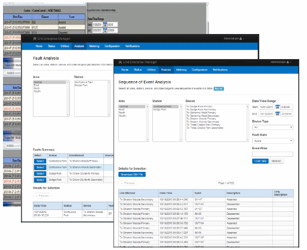
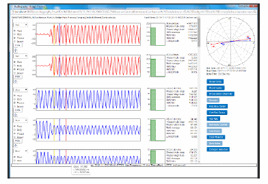
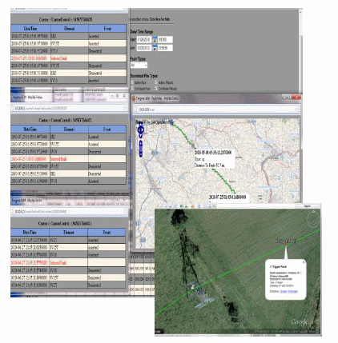
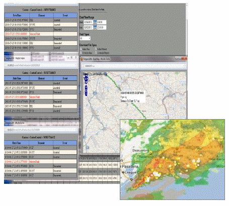
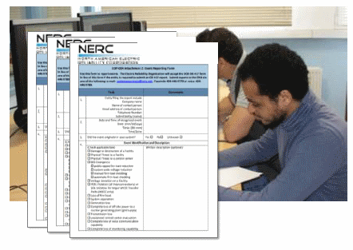

Grid Enterprise Manager (GEM)
Grid Enterprise Manager (GEM) is an advanced application platform that operates in conjunction with the FrameWorx data acquisition platform to provide the Operators and Engineers of Electrical Utilities with actionable data from IEDs located in Substations across the grid. GEM establishes and maintains a centralized database of IED operational and non-operational data, plus a set of core functions and advanced application that address critical use cases for operational performance and regulatory compliance.
-
Station Data Repository (SDR) is maintained for both
operational and non-operational data. The SDR maintains a
File System folder structure for native file datagrams (eg,
Comtrade, IEC Event) from the Edge, and in a SQL server
database.
Data Types:
- Metering (volts, amps)
- Oscillography/Phasor
- Fault/Events
- Sequence of Events
- Relay Settings
- Firmware Revisions
Device Types:- Relays
- Circuit Breakers
- Digital Fault Recorders
- Meters
- RTUs & PLCs
- Batteries
- User Notification alerts users to events, abnormal conditions, or equipment failure changes via e-mail and/or SMS message.
- NERC & CIP compliance is aided by Secure Sockets Layer (SSL), tunneling and directional connections, plus access to Oscillography/Phasor displays.
- Webservice Connectors are available to provide (push/pull) repository data to external applications, such as SCADA, Asset Performance Management, Maintenance Management, Mapping, Weather Systems, and Cloud-based AI applications.
FrameWorx Data Collectors continuously monitor IEDs across the grid for fault, disturbances and other events related to grid performance. When detected, relevant data is uploaded from the Substations and recorded to the Station Data Repository for analysis by Protection and Control Engineers. COMTRADE files and other data from multiple substations can be used to perform forensic analysis (SOE) of large scale power disturbance events (e.g. blackouts) to determine the root cause of the disturbance, help improve system protection and guide future mitigation strategies.
By collecting the oscillography, phasor, voltage and amperage data for each fault, GEM is able to analyze operating time versus the power dissipated for the breaker, a parameter that relates directly to the useful life of the breaker. This metric is of great value to asset management systems as they move from remedial to preventative maintenance strategies.
GEM’s Mapping module links GPS coordinates for grid substations and devices assets with Google Earth and distanceto- fault parameters to aid in tracing the source and geospatial location of a fault or fault cluster.
GEM’s Weather Map module merges weather service layers for rain, hail, surface winds and lightning strikes with the GIS Map for grid assets to assist engineers with correlation with faults and disturbances. Direction and speed of travel metrics aid in the positioning of repair crews.
In 2015, a NERC study determined that 31% of substation faults were caused by relay settings not matching their design specs, and Utilities were mandated to conduct periodic audits and improve recordkeeping, a largely manual and error-prone process. GEM’s Relay Settings module supports automatic, periodic collection of relay settings from IEDs across the grid, comparison to their design baseline, and notification of Engineers via email and/or SMS when differences are detected.

The same NERC study cited above also determined that out-ofdate firmware also contributed to substation faults, and this also led to Utilities adding that to their recordkeeping regime. GEM supports automatic, periodic collection of firmware revisions from IEDs across the grid, comparison to their design baseline, and notification of Engineers via email and/or SMS when differences are detected.
GEM’s Notifications module provides email and/or SMS alerts and notifications for faults, events, and exception reports for relay settings and firmware revisions. Notifications can also trigger workflows processes, such as event report generation.
GEM offers a number of document templates that can be automatically merged with fault & event data to produce a formatted report to fulfill NERC reporting requirements. Reports are emailed to Protection Engineering for review, augmentation, and forwarding in PDF format.
GEM’s Secure Substation Access module utilizes secure tunneling protocol to establish a secure connection with a remote substation. Users authenticate with GEM via Active Directory or LDAP with their normal account and password, followed by role-based authentication. All network traffic is encrypted. Logging is performed using time-stamping and is available to Administrator for NERC-CIP reporting. Once a secure connection is established, IEDs may be accessed using their proprietary console HMI or via GEM’s Station View (described below).
Most IEDs have a console HMI which uses a proprietary protocol to support installation, setup, firmware updates and diagnostic activities on the device. In most cases, these activities can only be performed by personnel who are onsite with the device. GEM’s Station View allows authorized personnel to access the device remotely to execute console functions, saving the time and travel expense to send personnel to the site.
Deployment Options
- Data Repository Service
- The Data Repository Service (DRS) requires a Windows Server 2016 or later powered by a dual-core CPU at 800MHz or better with 4GB RAM and 1TB fixed storage minimum and 802.11 ethernet port.
- Data Gateway, Concentrator & Collector
- The Data Gateway, Data Concentrator, and Data Collector modules can be deployed on a Windows 10 or Linux node powered by a single-core CPU at 800MHx or better with 1GB RAM with 4GB fixed storage available and dual 802.11 ethernet ports.
User Community
Tarigma has been a leading innovator in the development of FrameWorx data collectors for the wide range of Intelligent Electronic Devices (IEDs) used by Electric Utilities in their Smart Grid investments. Our user community spans three continents and includes: